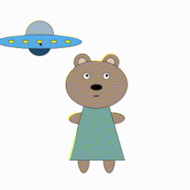

These 6 sketches were created using p5.js web editor. The first 4 sketches built off one another
starting with a static sketch, followed by a random sketch, an infinite sketch, and a interactive sketch.
These sketches feature Benjamin the Bear. The last 2 sketches contain audio and visual qualities and
feature Benjamin the baby.
This gif features Benjamin's ascension to alienhood

For my development process I will go further into depth for my interactive sketch.
With every sketch, I started by watching a bunch of coding train videos and read
the relevant reference sheets. For this sketch I referenced the shapes I used, mouse interactivity, and random.
After
learning some new functionality, I copied over my original bear sketch from my static sketch. Writing code
is something that does not come naturally for me so I had actually started each sketch
by mapping out and hard coding every point. For this sketch I did that for the light up buttons on
the UFO and the light beam that comes off of it. After doing that, I was able to determine what the patterns are between each shape. Once
I can see the pattern, I then am able to write it into a for loop. It turns out it would've been much faster to make the location for the UFO
relevant to the mouse position in the first place.
With this sketch, I also drew from my
previous sketch of using the random function to make the UFO light up. I then learned the difference between
mouseIsPressed and the mousePressed() function and deemed that the mouseIsPressed made more sense for this sketch.
After playing around with different colors and locations, I was satisfied with my sketch!
Below I attached an image of the UFO before the random lights and while it was still in a fixed position
For this mini project, I ran into a lot of issues. Luckily there is an abundance of resources online that helped me troubleshoot these issues. However, one issue I faced time and time again was a logic issue. For the requirements of this project, my sketches had to still be correct even when the window size has changed. As someone who had fixed positions for every single shape... this was a difficult issue. In hindsight I definitely should have learned how to do this from the beginning and set my positions in accordance to the window size. Doing this retroactively meant a lot of additional math and a very large amount of guessing and checking. In the end, I used windowHeight/2 and windowWidth/2 as variables and positioned my elements in reference to the origin or the center of my canvas. Another issue I ran into that I think is slightly relevant is that for the entirety of this project, I couldn't figure out why my canvas was missized for every sketch. It turns out, I had set up the canvas with windowHeight, windowWidth rather than vice versa (the correct way).